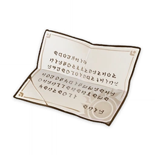

Liyue · Books & Literature
Ragged Notebook (Bygones Times Like Dust Passing)
This Liyue quest diary follows a father’s attempts to save his gravely ill wife, his decision to leave their daughter Shenhe as a sacrifice, and his later remorse.

A diary from Shenhe’s village
The item is found inside a hut in the abandoned village during the Archon Quest segment Bygones Times Like Dust Passing. It is one of several records that help Yun Jin understand the story behind her opera.
Its author is not named. The quest identifies him through the contents of his diary and related records as Shenhe’s father.
The father’s search for a cure
The entries begin while the writer’s wife is gravely ill. He describes watching her decline and reading old texts in a desperate attempt to save her. He later finds a book Mingjun had kept and follows its instructions to summon a god.
He offers his own life, but the being directs him toward Shenhe and tells him she bears a calamity-linked fate. The diary records the father’s choice to leave his daughter in the cave, followed by his anxiety and remorse when she does not return.
What the other village records add
The separate Records of a Changing Village confirms that the mother died, Shenhe disappeared, and her father later died by suicide. It also says traces of an evil god’s remains were found in the village. The diary itself calls the being a god but does not establish its nature independently.
Cloud Retainer later recounts finding Shenhe, then a young child, locked in combat with the god’s remains. She defeats the creature and adopts Shenhe. These sources explain the danger and outcome without making the father’s claim that Shenhe caused the illness true.
The opera versus Shenhe’s experience
Yun Jin’s opera turns the incident into a story of a brave girl who volunteers to defeat a monster. The diary reveals that the child was placed in danger by her father and did not choose the sacrifice. Yun Jin decides that the script needs to respect Shenhe’s lived experience.
This record is personal testimony within a quest reconstruction. It should not be confused with a general Liyue history or with unrelated texts about the Guili Assembly.
This is an original CoreGG reading guide, not an official HoYoverse article or a reproduction of the game text. Source links below identify the records used so you can check the original context.
Sources & references
Check these sources for the original game text and reference trail.